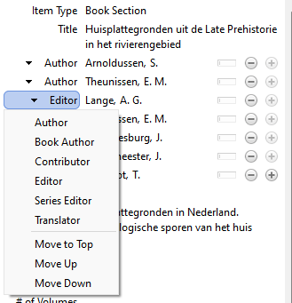
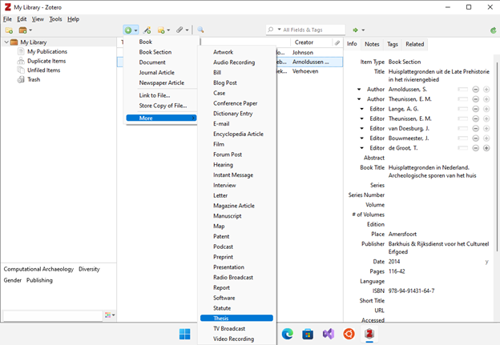
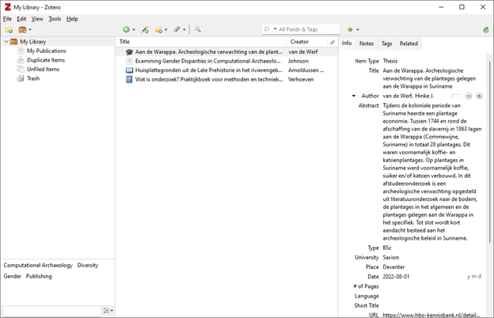
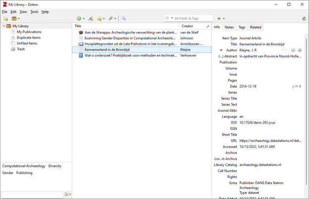
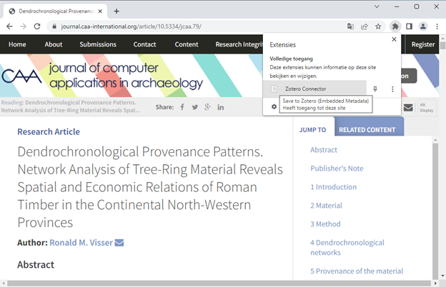
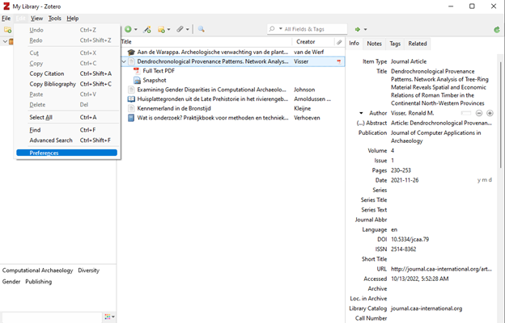
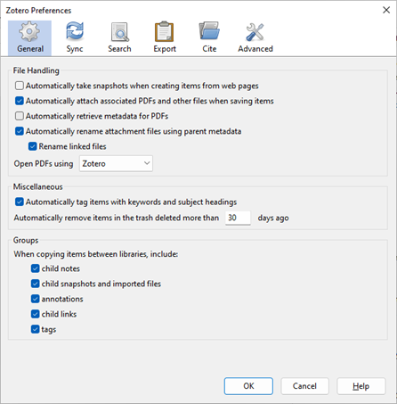
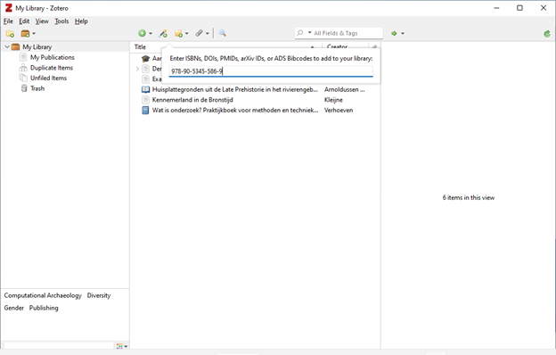
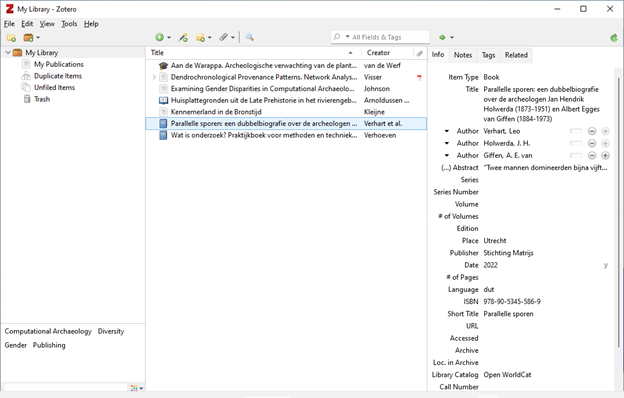

Gegevens invoeren/opslaan in Zotero
Ronald Visser ![]()
Het is belangrijk dat gegevens op de juiste manier in Zotero komen, want deze hebben we nodig om er uiteindelijk naar te kunnen verwijzen, zodat ons onderzoek herleidbaar en reproduceerbaar wordt.
Boek invoeren
We gaan nu een boek invoeren. Dat betreft het boek “Wat is Onderzoek?” van Nel Verhoeven. Dit staat op de boekenlijst, dus jullie hebben dat in eigen bezit. Je kunt de informatie ook op de website vinden: https://www.boomhogeronderwijs.nl/product/100-10499_Wat-is-onderzoek-7e-druk
Van een boek hebben we de volgende gegevens nodig:
- Auteur(s)
- Jaar van uitgave
- Titel
- Plaats van uitgave
- Editie/druk
- Uitgeverij
- ISBN
Om deze gegevens in Zotero te kunnen invoeren moeten we in Zotero een nieuw item aanmaken. Kies het groene plusje om een nieuw item aan te maken:

Kies dan Book/Boek

Het eerste dat Zotero vraagt is om de titel in te voeren. Dat lijkt als je op de website kijkt: “Wat is onderzoek?” te zijn, maar als je het boek opent, staat er ook een ondertitel: “Praktijkboek voor methoden en technieken”. Dat moet je dus ook invoeren. Voer alle gegevens van het boek in, zoals in onderstaand voorbeeld:

Tijdschriftartikel invoeren
We gaan nu een artikel uit een wetenschappelijk tijdschrift invoeren. Dit betreft een peer-reviewed artikel uit 2022 in het “Journal of Computer Applications in Archaeology” (JCAA). Phyllis S. Johnson heeft een artikel geschreven met de title: “Examining Gender Disparities in Computational Archaeology Publications: A Case Study in the Journal of Computational Applications in Archaeology and the Computer Applications and Quantitative Methods in Archaeology Conference Proceedings”
Op de website staat uitgelegd hoe je dit moet citeren (https://journal.caa-international.org/articles/10.5334/jcaa.84/):
“How to Cite: Johnson, P.S., 2022. Examining Gender Disparities in Computational Archaeology Publications: A Case Study in the Journal of Computational Applications in Archaeology and the Computer Applications and Quantitative Methods in Archaeology Conference Proceedings. Journal of Computer Applications in Archaeology, 5(1), pp.140–151. DOI: http://doi.org/10.5334/jcaa.84”
Kies eerst New Item en dan Journal Article. Het onderstaande zou dus ingevoerd moeten worden in Zotero:

Als er een abstract (samenvatting van het artikel) is, is het handig om dit ook in Zotero op te slaan:

Artikel in bundel invoeren
We gaan nu een artikel uit een geredigeerde bundel invoeren. Hiervoor kiezen we een hoofdstuk uit het boek:
Lange, A.G./E.M. Theunissen/J.H.C. Deeben/J. van Doesburg/J. Bouwmeester/T. de Groot (eds.), 2014: Huisplattegronden in Nederland. Archeologische sporen van het huis, Amersfoort.
Het gaat om het hoofdstuk “Huisplattegronden uit de Late Prehistorie in het rivierengebied” geschreven door S. Arnoldussen en E.M. Theunissen, dat begint op pagina 116 en eindigt op pagina 142.
Om een boek in een geredigeerde bundel in te voeren, kies je weer new item en dan Book section. Enkele tips:
Na het invoeren van de eerste auteur, kun je bij auteur met een plusje een tweede auteur invoeren.
Voor het invoeren van de redacteuren, kun je datzelfde plusje gebruiken, maar verander auteur dan in Editor.

De volgorde van de redacteuren / auteurs is hetzelfde als dat in het boek / artikel is gegeven. Mocht je per ongeluk de volgorde verkeerd hebben ingevoerd, kun je de volgorde aanpassen
Het eindresultaat zal er ongeveer zo uitzien:

Scriptie invoeren
We gaan nu een scriptie invoeren. Hiervoor zoek je een scriptie van de opleiding Archeologie in de HBO-kennisbank: https://www.hbo-kennisbank.nl/. Voor het voorbeeld maken we gebruik van het afstudeerwerkstuk van Hinke van de Werf (https://www.hbo-kennisbank.nl/details/saxionhogeschool:A0501F4C-6152-4B80-ABD265BC5B77781E), maar je mag ook een ander werkstuk gebruiken.
Om een scriptie in te voeren, kies je weer new item en dan More en dan Thesis.

Het eindresultaat zal er dan ongeveer zo uitzien:

Dataset invoegen
We gaan nu een gegevensset invoegen. Hiervoor gebruiken we een dataset over de Bronstijd in Kennemerland: https://doi.org/10.17026/dans-283-jvuz. Hier zien we dat deze dataset gemaakt is door Jos Kleijne en er is een samenvatting. Het jaar van publicatie is ook vermeld.
Om een dataset in te voeren, kies je weer new item en dan Journal Article. Dit lijkt wat vreemd, maar dat komt omdat het dataset-type nog niet bestaat in Zotero. Dat komt wel en dat lossen we nu anders op. Dit doen we door in het veld Extra: “Type: dataset” in te voeren (zonder aanhalingstekens).
Hieronder staat een screenshot van hoe het er uit zo moeten zien in Zotero:

Automatisch invoegen vanaf websites
We hebben tot dusver alles handmatig ingevoerd, maar gelukkig kan het ook automatisch, mits en website geschikt is daarvoor. We kunnen dat pas doen als er een connector is geïnstalleerd. Deze kun je met jouw internetbrowser (Firefox of Chrome) installeren vanaf: https://www.zotero.org/download/
Als je nu naar de website van het Journal CAA gaat (https://journal.caa-international.org/5/volume/5/issue/1/), kun je diverse artikelen vinden. Kies een artikel dat je aanspreekt (kan ook in volumes 1-4). Als je daar aangekomen bent, kun je via de extensies (puzzelstukje naast de adresbalk) het artikel toevoegen aan jouw database:

Klik dan op het artikel icoontje en het artikel is aan jouw bibliotheek toegevoegd.

Het vervelende is dat de naam van het bestand (PDF) niet heel duidelijk is. Dat kun je automatisch laten aanpassen. Ga naar Edit – Preferences:

En zet het vinkje aan bij Rename linked files:

Bij ieder nieuwe invoeging zouden de PDF’s automatisch logisch hernoemd moeten worden. Je kunt het ook handmatig doen bij eerder ingevoerde artikelen door met de rechtermuistoets te klinken op de PDF en dan Rename File from Parent Metadata te kiezen. Het bestand krijgt nu een logische naam.
Je ziet bij mijn instellingen dat ik de snapshots heb uitgezet bij webpagina’s. Dat is een persoonlijke voorkeur, maar dat mag je helemaal zelf weten of je die aan of uit wilt zetten.

Op deze laatste manier heb je zowel de bibliografische gegevens in jouw systeem staan, als ook de PDF-bestanden. Hierdoor kun je in Zotero niet alleen de beschrijvingen vinden, maar ook de bijhorende artikelen of boeken. Je kunt aan ieder item meerdere bestanden koppelen als je dat wilt.
Automatisch invoegen met een ISBN
Het is ook mogelijk om een boek in te voegen als je het ISBN weet. Zo is onlangs een mooie dubbel biografie verschenen van Leo Verhart over Holwerda en Van Giffen (https://www.matrijs.com/Parallelle-sporen.-Een-dubbelbiografie-over-de-archeologen-Jan-Hendrik-Holwerda-1873-1951-en-Albert-Egges-van-Giffen-1884-1973.html). Het ISBN van dit boek is: 978-90-5345-586-9.
Als je op het toverstafje klinkt naast het groene plusje krijg je de mogelijkheid om het ISBN in te voegen. Het invoegen van een ISBN kan op verschillende manieren. In dit geval maakt het niet uit of je nu 978-90-5345-586-9, 978 90 5345 586 9 of 9789053455869 invoert, want op alle manieren zal hetzelfde boek in Zotero aan jouw bibliotheek worden toegevoegd. Als je op enter drukt zal te boek worden toegevoegd.

Controleer goed of alle gegevens goed zijn ingevoerd, want dit gaat niet altijd helemaal goed. Controleer spelling of andere fouten.

[1] Het invoegen van een ISBN kan op verschillende manieren. In dit geval maakt het niet uit of je nu 978-90-5345-586-9, 978 90 5345 586 9 of 9789053455869 invoert, want op alle manieren zal hetzelfde boek in Zotero aan jouw bibliotheek worden toegevoegd.